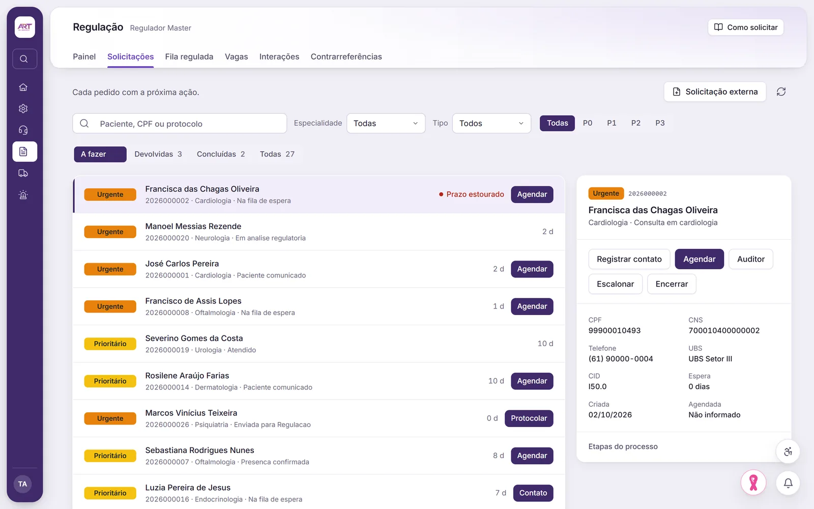
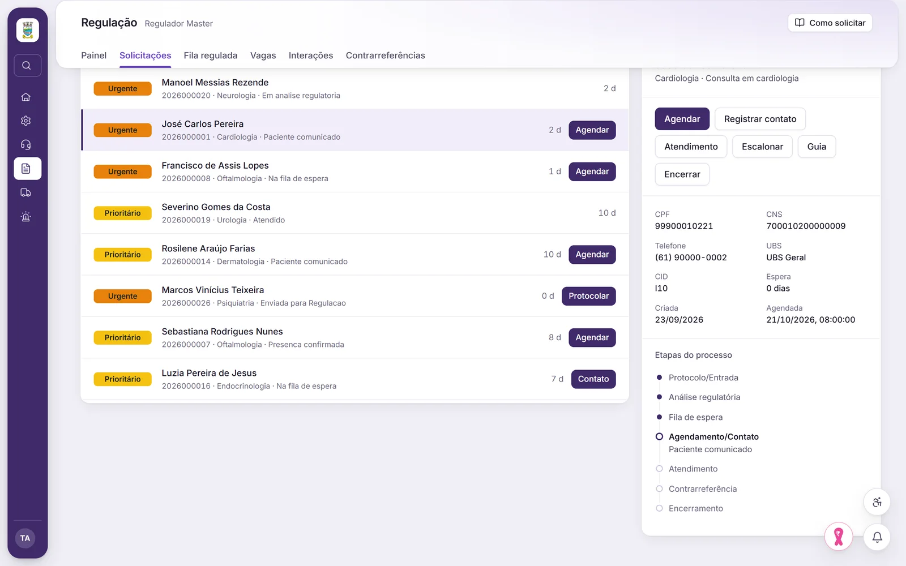
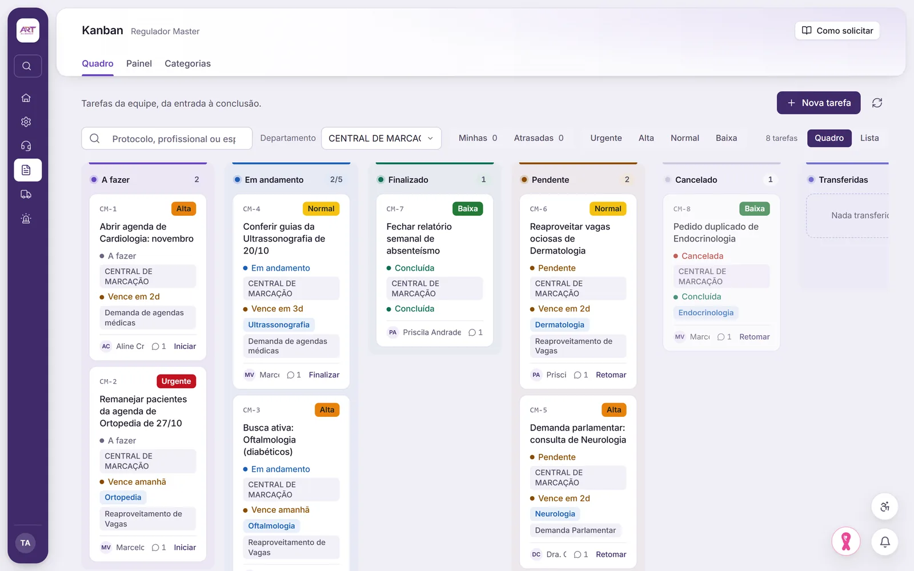

Solicitações com protocolo
Envio, pendência e resposta, revisão técnica, reclassificação, devolução, agendamento e encerramento, cada passo registrado.
Regulação assistencial
Da unidade que pede até a vaga confirmada, cada solicitação tem etapa, prazo e responsável à vista de quem precisa acompanhar.



O que a regulação faz
Envio, pendência e resposta, revisão técnica, reclassificação, devolução, agendamento e encerramento, cada passo registrado.
Vagas publicadas e cruzadas com as solicitações compatíveis, pedidos de abertura de agenda, cancelamentos e impedimentos.
Fila própria para o retorno, com responsável, anexos e aviso de exame pronto, o ponto onde o paciente costuma se perder.
Importação da fila por arquivo, com registro de quem assumiu, regulou ou não conseguiu contato.
Fila de auditoria, atribuição, parecer, devolução e reenvio, com painel de acompanhamento.
Quadro de tarefas com anexos, comentários e transferência, e aviso automático de prazo.
Como funciona
Numa demonstração com dados fictícios, seguimos uma solicitação do envio até a vaga confirmada.